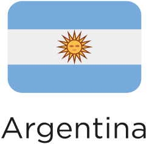

Portal do Paciente
Portal do Médico
Início
Quem Somos
Telemonitoramento
Nossos Produtos
Instituições
Contate-nos
INSTITUIÇÕES
As Instituições associadas ao Virtual Sense oferecem:
Atendimento remoto
alinhado às novas demandas dos pacientes, com foco na prevenção.
Monitoramento diário
em tempo real que constrói um histórico detalhado de eventos para cada paciente.
Incentivo ao cumprimento
de dietas e medicação.
Detecção precoce de sintomas suspeitos
, alterações nos sinais vitais.
Precisão diagnóstica
por meio de parâmetros médicos baseados em evidências científicas.
Respostas imediatas e focadas
para situações específicas.
Superação
das barreiras de espaço e tempo.
Algumas instituições que
confiam em nós
Temos presença em:

Precisa de ajuda?
Entre em contato!